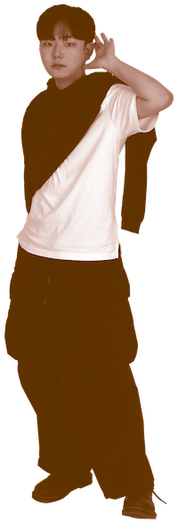
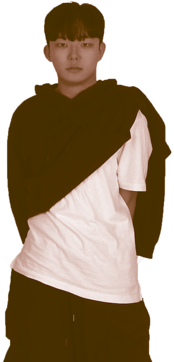

|  |
Kim Jeong Woo
|
|
|
이름 : 김정우 생년월일 : 2003.07.08 별명 : 제이더블유무 MBTI : ISFP or ISFJ 인스타 : jwmoo_74 이메일 : wkjnmw@kaywon.ac.kr 취미 : 노래듣기 좋아하는 것 : 백예린 싫어하는 것 : 불친절한 사람 초등학교 : 은산초등학교 졸업 중학교 : 은산중학교 졸업 고등학교 : 부여정보고등학교 졸업 |
 | |
|
Introduction 계원예대에 들어와 친해지게 된 오빠 ‘김정우’ 첫 수업날부터 존재감이 뿜뿜 했던 오빠다. 신입생 OT 뒷풀이 자리에서 혜린 언니 덕에 친해졌다. 엄청난 인싸력으로 뒷풀이 자리에서 일어나 춤추던 모습을 아직도 잊지 못한다. 그 후 오빠는 과대, 나는 부과대로 함께 학과 일을 하며 더욱 친해졌다. 재밌고 웃음을 주는 오빠다. 생각이 깊고 긍정적이라 내가 포기할때마다 손을 내밀어 주는 힘이 되는 존재! |
||